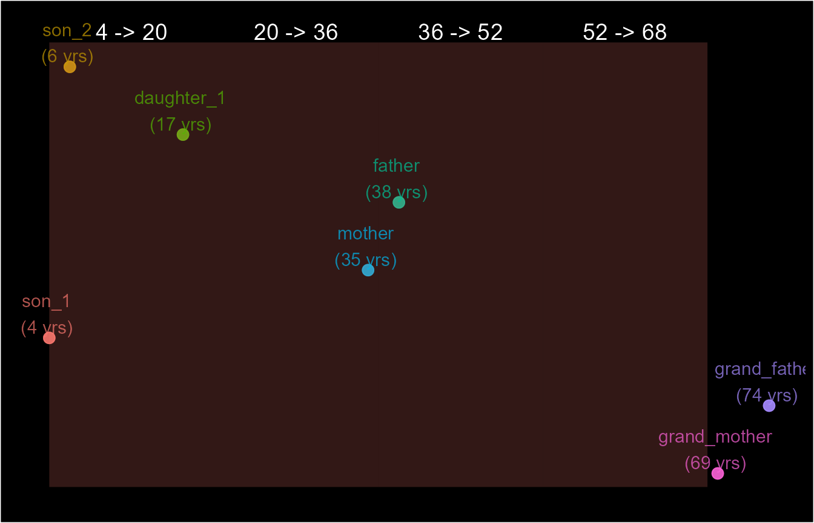
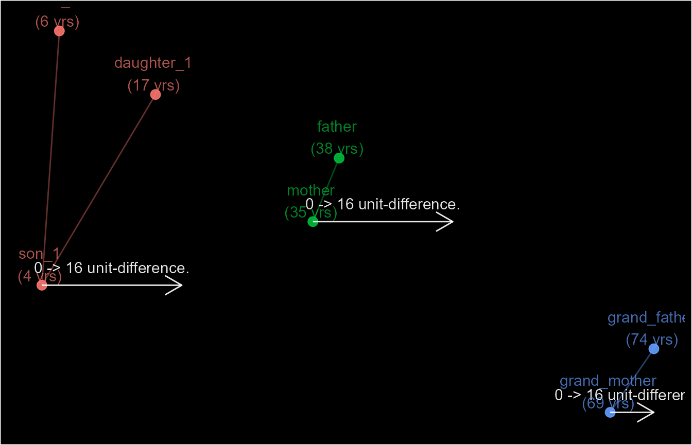

This vignette will introduce you to partitions().
partitions() provides an alternative approach to
implementing case definitions. In summary, it uses specific temporal
boundaries as the window of occurrence. This differs from
episodes() where the boundaries are calculated as durations
relative to index events. partitions() produces a similar
S4 class identifier (pane) referred to as
panes and share similar arguments with episodes().
To demonstrate this difference, let’s review the homes
dataset below. It has data on household members including their ages.
We’ll attempt to apply a case definition to identify a three-generation
home, where each generation includes individuals aged not more than 16
years apart.
homes <- data.frame(member = c("son_1", "son_2", "daughter_1",
"father", "mother", "grand_father", "grand_mother"),
age = c(4, 6, 17, 43, 40, 74, 69))
homes
#> member age
#> 1 son_1 4
#> 2 son_2 6
#> 3 daughter_1 17
#> 4 father 43
#> 5 mother 40
#> 6 grand_father 74
#> 7 grand_mother 69The simplest approach would be to specify the age bands for each generation. In this context, these are the temporal boundaries.
age_bands <- seq(0, 69, by =17)
age_bands <- number_line(age_bands, age_bands + 16)
age_bands
#> [1] "0 -> 16" "17 -> 33" "34 -> 50" "51 -> 67" "68 -> 84"
homes$grp_1 <- partitions(homes$age, window = age_bands, separate = TRUE)
homes
#> member age grp_1
#> 1 son_1 4 PN.1 (I)
#> 2 son_2 6 PN.1 (D)
#> 3 daughter_1 17 PN.3 (I)
#> 4 father 43 PN.5 (D)
#> 5 mother 40 PN.5 (I)
#> 6 grand_father 74 PN.7 (D)
#> 7 grand_mother 69 PN.7 (I)
schema(homes$grp_1, seed = 4,
custom_label = paste0(homes$member, " \n(", homes$age, " yrs)"))However, we can make the case that the children are all part of the
same generation since no two are older than 16 years apart. This
presents the main difference between partitions() and
episodes(). Unlike episodes(), the duration
(age gaps) between records is not a factor. Here records or events are
linked together simply because they exist within the same interval (age
gap).
To correct this, we can start the age band from age 6 but this
becomes difficult to manage when analysing multiple homes. Instead, we
can use the by or lenght.out argument to
create windows (window) relative to the first event (or
custom_sort) only. Although this makes it more like
episodes(), it is still different since all age gaps are
relative to only one reference event (I).
homes$grp_2 <- partitions(homes$age, by = 16, separate = TRUE)
schema(homes$grp_2, seed = 4,
custom_label = paste0(homes$member, " \n(", homes$age, " yrs)"))Now that we have identified the generations, we can build on this by linking every record on the conditions that there’s a specified number of generations (windows). Below we ask for three to four generations.
homes$grp_3 <- partitions(homes$age, by = 16,
separate = FALSE,
windows_total = number_line(3, 4))
homes
#> member age grp_1 grp_2 grp_3
#> 1 son_1 4 PN.1 (I) PN.1 (I) PN.1 (I)
#> 2 son_2 6 PN.1 (D) PN.1 (D) PN.1 (D)
#> 3 daughter_1 17 PN.3 (I) PN.1 (D) PN.1 (D)
#> 4 father 43 PN.5 (D) PN.5 (D) PN.1 (D)
#> 5 mother 40 PN.5 (I) PN.5 (I) PN.1 (D)
#> 6 grand_father 74 PN.7 (D) PN.7 (D) PN.1 (D)
#> 7 grand_mother 69 PN.7 (I) PN.7 (I) PN.1 (D)
schema(homes$grp_3, seed = 4,
custom_label = paste0(homes$member, " \n(", homes$age, " yrs)"))Despite the use of by and length.out, if
the configurations of records relative to the index record changes, the
resulting identifier can change as well. For example, if the
"mother" and "father" were five years younger,
this would place them in two different age gaps, resulting in a total of
four generations.
homes$alt_age <- homes$age
lgk <- homes$member %in% c("father", "mother")
homes$alt_age[lgk] <- homes$alt_age[lgk] - 5
homes$grp_4 <- partitions(homes$alt_age, by = 16,
separate = TRUE,
windows_total = number_line(3, 4))
homes
#> member age grp_1 grp_2 grp_3 alt_age grp_4
#> 1 son_1 4 PN.1 (I) PN.1 (I) PN.1 (I) 4 PN.1 (I)
#> 2 son_2 6 PN.1 (D) PN.1 (D) PN.1 (D) 6 PN.1 (D)
#> 3 daughter_1 17 PN.3 (I) PN.1 (D) PN.1 (D) 17 PN.1 (D)
#> 4 father 43 PN.5 (D) PN.5 (D) PN.1 (D) 38 PN.4 (I)
#> 5 mother 40 PN.5 (I) PN.5 (I) PN.1 (D) 35 PN.5 (I)
#> 6 grand_father 74 PN.7 (D) PN.7 (D) PN.1 (D) 74 PN.7 (D)
#> 7 grand_mother 69 PN.7 (I) PN.7 (I) PN.1 (D) 69 PN.7 (I)
schema(homes$grp_4, seed = 4,
custom_label = paste0(homes$member, " \n(", homes$alt_age, " yrs)"))
This makes a difference if our conditions changes to only three generations as the condition for our three-generation households.
homes$grp_5 <- partitions(homes$alt_age, by = 16,
separate = FALSE,
windows_total = number_line(3, 3))
homes
#> member age grp_1 grp_2 grp_3 alt_age grp_4 grp_5
#> 1 son_1 4 PN.1 (I) PN.1 (I) PN.1 (I) 4 PN.1 (I) PN.1 (I)
#> 2 son_2 6 PN.1 (D) PN.1 (D) PN.1 (D) 6 PN.1 (D) PN.2 (I)
#> 3 daughter_1 17 PN.3 (I) PN.1 (D) PN.1 (D) 17 PN.1 (D) PN.3 (I)
#> 4 father 43 PN.5 (D) PN.5 (D) PN.1 (D) 38 PN.4 (I) PN.4 (I)
#> 5 mother 40 PN.5 (I) PN.5 (I) PN.1 (D) 35 PN.5 (I) PN.5 (I)
#> 6 grand_father 74 PN.7 (D) PN.7 (D) PN.1 (D) 74 PN.7 (D) PN.6 (I)
#> 7 grand_mother 69 PN.7 (I) PN.7 (I) PN.1 (D) 69 PN.7 (I) PN.7 (I)
schema(homes$grp_5, seed = 4,
custom_label = paste0(homes$member, " \n(", homes$alt_age, " yrs)"))
We see that the household no longer has a common identifier that
would identify it as a three-generation household. If we wish to address
this, then episodes() would be the better option.
homes$grp_6 <- episodes(homes$alt_age, case_length = 16)
homes
#> member age grp_1 grp_2 grp_3 alt_age grp_4 grp_5 grp_6
#> 1 son_1 4 PN.1 (I) PN.1 (I) PN.1 (I) 4 PN.1 (I) PN.1 (I) E.1 (C)
#> 2 son_2 6 PN.1 (D) PN.1 (D) PN.1 (D) 6 PN.1 (D) PN.2 (I) E.1 (D)
#> 3 daughter_1 17 PN.3 (I) PN.1 (D) PN.1 (D) 17 PN.1 (D) PN.3 (I) E.1 (D)
#> 4 father 43 PN.5 (D) PN.5 (D) PN.1 (D) 38 PN.4 (I) PN.4 (I) E.5 (D)
#> 5 mother 40 PN.5 (I) PN.5 (I) PN.1 (D) 35 PN.5 (I) PN.5 (I) E.5 (C)
#> 6 grand_father 74 PN.7 (D) PN.7 (D) PN.1 (D) 74 PN.7 (D) PN.6 (I) E.7 (D)
#> 7 grand_mother 69 PN.7 (I) PN.7 (I) PN.1 (D) 69 PN.7 (I) PN.7 (I) E.7 (C)
schema(homes$grp_6, seed = 4,
show_labels = c("length_arrow", "length"),
custom_label = paste0(homes$member, " \n(", homes$alt_age, " yrs)"))
Unlike partitions(), additional analyses is required to
flag the whole household as a three-generation household. For example,
we can count the number of “occurrences” ( age gaps in epid
talk).
as.data.frame(homes$grp_6)
#> epid sn wind_nm case_nm dist_wind_index dist_epid_index epid_total
#> 1 1 1 Case Case 0 0 3
#> 2 1 2 Case Duplicate_C 2 2 3
#> 3 1 3 Case Duplicate_C 13 13 3
#> 4 5 4 Case Duplicate_C 3 3 2
#> 5 5 5 Case Case 0 0 2
#> 6 7 6 Case Duplicate_C 5 5 2
#> 7 7 7 Case Case 0 0 2
#> iteration wind_id1 epid_start epid_end epid_length epid_dataset
#> 1 1 1 NA NA NA <NA>
#> 2 1 1 NA NA NA <NA>
#> 3 1 1 NA NA NA <NA>
#> 4 2 5 NA NA NA <NA>
#> 5 2 5 NA NA NA <NA>
#> 6 3 7 NA NA NA <NA>
#> 7 3 7 NA NA NA <NA>
homes$t3_home <- length(unique(homes$grp_6@wind_id[[1]])) == 3
homes
#> member age grp_1 grp_2 grp_3 alt_age grp_4 grp_5 grp_6
#> 1 son_1 4 PN.1 (I) PN.1 (I) PN.1 (I) 4 PN.1 (I) PN.1 (I) E.1 (C)
#> 2 son_2 6 PN.1 (D) PN.1 (D) PN.1 (D) 6 PN.1 (D) PN.2 (I) E.1 (D)
#> 3 daughter_1 17 PN.3 (I) PN.1 (D) PN.1 (D) 17 PN.1 (D) PN.3 (I) E.1 (D)
#> 4 father 43 PN.5 (D) PN.5 (D) PN.1 (D) 38 PN.4 (I) PN.4 (I) E.5 (D)
#> 5 mother 40 PN.5 (I) PN.5 (I) PN.1 (D) 35 PN.5 (I) PN.5 (I) E.5 (C)
#> 6 grand_father 74 PN.7 (D) PN.7 (D) PN.1 (D) 74 PN.7 (D) PN.6 (I) E.7 (D)
#> 7 grand_mother 69 PN.7 (I) PN.7 (I) PN.1 (D) 69 PN.7 (I) PN.7 (I) E.7 (C)
#> t3_home
#> 1 TRUE
#> 2 TRUE
#> 3 TRUE
#> 4 TRUE
#> 5 TRUE
#> 6 TRUE
#> 7 TRUESimilar to episodes(), everything we’ve discussed above
can be done separately for different subsets of the dataset by using the
strata argument. For example, different households.
duplicate <- rbind(homes[1:2], homes[1:2])
duplicate$house_hold <- c(rep("london", 7), rep("hull", 7))
duplicate$grp_1 <- partitions(duplicate$age, by = 16,
separate = FALSE,
windows_total = number_line(3, 4),
strata = duplicate$house_hold)
duplicate$grp_2 <- episodes(duplicate$age,
case_length = 16,
strata = duplicate$house_hold)
duplicate
#> member age house_hold grp_1 grp_2
#> 1 son_1 4 london PN.1 (I) E.01 (C)
#> 2 son_2 6 london PN.1 (D) E.01 (D)
#> 3 daughter_1 17 london PN.1 (D) E.01 (D)
#> 4 father 43 london PN.1 (D) E.05 (D)
#> 5 mother 40 london PN.1 (D) E.05 (C)
#> 6 grand_father 74 london PN.1 (D) E.07 (D)
#> 7 grand_mother 69 london PN.1 (D) E.07 (C)
#> 8 son_1 4 hull PN.8 (I) E.08 (C)
#> 9 son_2 6 hull PN.8 (D) E.08 (D)
#> 10 daughter_1 17 hull PN.8 (D) E.08 (D)
#> 11 father 43 hull PN.8 (D) E.12 (D)
#> 12 mother 40 hull PN.8 (D) E.12 (C)
#> 13 grand_father 74 hull PN.8 (D) E.14 (D)
#> 14 grand_mother 69 hull PN.8 (D) E.14 (C)
schema(duplicate$grp_1, seed = 5,
custom_label = paste0(duplicate$member, " (", duplicate$age, " yrs) in \n", duplicate$house_hold))